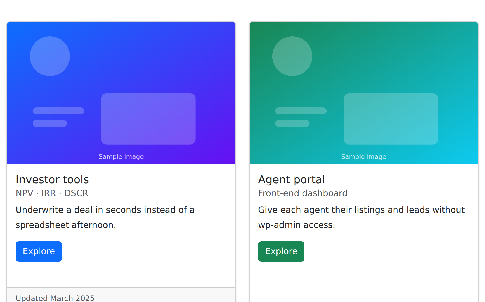
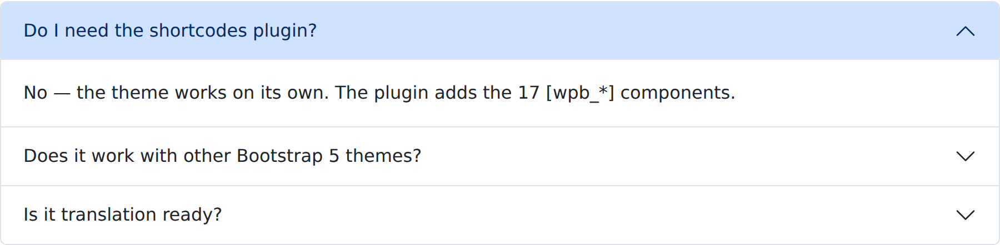
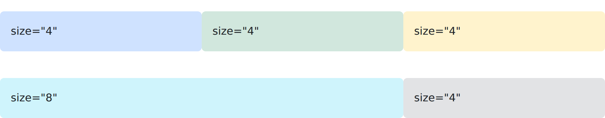
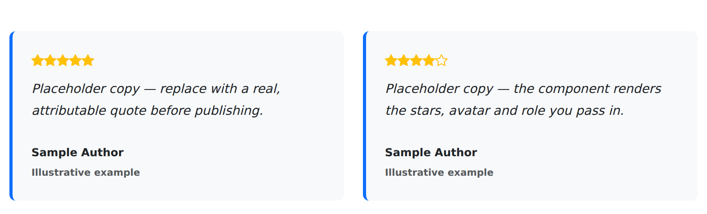
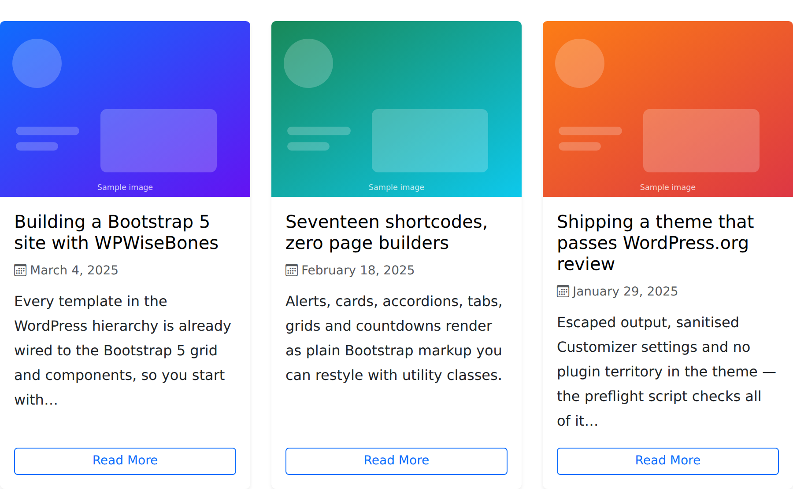
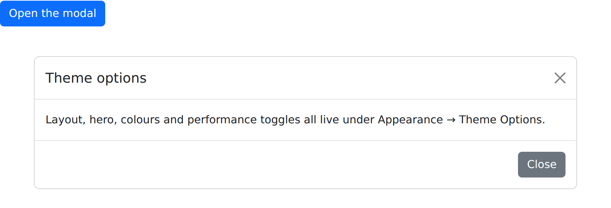

WiseBones Shortcodes
Version 1.0.7 · 17 components across 20 shortcode tags · works with any Bootstrap 5 theme. Each screenshot below is the real output of the shortcode shown beside it.
About the plugin
Shortcodes are plugin territory under the WordPress.org theme guidelines, so they live in
wisebones-shortcodes rather than in the theme. The plugin bundles Bootstrap 5 and Bootstrap
Icons locally and enqueues them only when the active theme hasn't already provided them, so the components
render correctly on any theme without loading Bootstrap twice.
Every attribute value is escaped on output, colour and layout attributes are constrained to Bootstrap's
own class names through sanitize_html_class(), and inner content runs through
wp_kses_post() — so shortcodes can be nested (a [wpb_card] inside a
[wpb_col] inside a [wpb_row]) without hand-written HTML.
Three components come in pairs: [wpb_accordion] wraps [wpb_accordion_item],
[wpb_tabs] wraps [wpb_tab], and [wpb_row] wraps
[wpb_col]. A reference of all of them is also available in the admin under
Plugins → WiseBones Shortcodes.
shortcode_atts() defaults
when this page is built, so they can't drift from the code.
Alert
[wpb_alert]
Contextual Bootstrap alert with an optional icon, bold heading and dismiss button.

[wpb_alert type="success" icon="bi-check-circle" heading="Saved." dismissible="true"]Your theme options were updated.[/wpb_alert]
[wpb_alert type="warning" icon="bi-exclamation-triangle"]Bootstrap 5 is required for these components.[/wpb_alert]| Attribute | Default |
|---|---|
type | primary |
dismissible | false |
icon | — |
heading | — |
class | — |
Button
[wpb_button]
Bootstrap button with variant, size, icon and target control.
[wpb_button url="/pricing/" style="primary" size="lg" icon="bi-rocket-takeoff"]Start free[/wpb_button]
[wpb_button url="/docs/" style="outline-secondary" icon="bi-book" icon_pos="right"]Read the docs[/wpb_button]| Attribute | Default |
|---|---|
url | # |
style | primary |
size | — |
icon | — |
icon_pos | left |
target | _self |
rel | — |
class | — |
id | — |
disabled | false |
Card
[wpb_card]
Image, title, subtitle, body, button and footer in a Bootstrap card.

[wpb_row gutter="4"]
[wpb_col size="6"][wpb_card title="Investor tools" subtitle="NPV · IRR · DSCR" image="https://example.com/investor-tools.jpg" btn_text="Explore" btn_url="/features/" footer="Updated March 2025"]Underwrite a deal in seconds instead of a spreadsheet afternoon.[/wpb_card][/wpb_col]
[wpb_col size="6"][wpb_card title="Agent portal" subtitle="Front-end dashboard" image="https://example.com/agent-portal.jpg" btn_text="Explore" btn_url="/features/" btn_style="success"]Give each agent their listings and leads without wp-admin access.[/wpb_card][/wpb_col]
[/wpb_row]| Attribute | Default |
|---|---|
title | — |
subtitle | — |
image | — |
btn_text | — |
btn_url | # |
btn_style | primary |
footer | — |
shadow | sm |
class | — |
border | — |
text | — |
Accordion
[wpb_accordion]
Collapsible FAQ list built from [wpb_accordion_item] children.

[wpb_accordion]
[wpb_accordion_item title="Do I need the shortcodes plugin?" open="true"]No — the theme works on its own. The plugin adds the 17 [wpb_*] components.[/wpb_accordion_item]
[wpb_accordion_item title="Does it work with other Bootstrap 5 themes?"]Yes. Bootstrap is auto-loaded only when the active theme does not already provide it.[/wpb_accordion_item]
[wpb_accordion_item title="Is it translation ready?"]Yes, every string is wrapped in the plugin text domain.[/wpb_accordion_item]
[/wpb_accordion]| Attribute | Default |
|---|---|
flush | false |
class | — |
title | Item |
open | false |
Tabs
[wpb_tabs]
Tabbed panes in tabs, pills or underline style.
[wpb_tabs style="pills"]
[wpb_tab title="Overview" icon="bi-house" active="true"]A Bootstrap 5 starter theme with the full WordPress template hierarchy.[/wpb_tab]
[wpb_tab title="Install" icon="bi-download"]Upload the theme zip, activate, then install the companion plugin when prompted.[/wpb_tab]
[wpb_tab title="Support" icon="bi-life-preserver"]Open an issue on GitHub with your WordPress and PHP version.[/wpb_tab]
[/wpb_tabs]| Attribute | Default |
|---|---|
style | tabstabs | pills | underline |
fill | false |
class | — |
title | Tab |
icon | — |
active | false |
Row & columns
[wpb_row]
The Bootstrap 12-column grid with responsive breakpoint attributes.

[wpb_row gutter="3"]
[wpb_col size="4" class="p-3 bg-primary-subtle rounded"]size="4"[/wpb_col]
[wpb_col size="4" class="p-3 bg-success-subtle rounded"]size="4"[/wpb_col]
[wpb_col size="4" class="p-3 bg-warning-subtle rounded"]size="4"[/wpb_col]
[/wpb_row]
[wpb_row gutter="3" class="mt-3"]
[wpb_col size="8" class="p-3 bg-info-subtle rounded"]size="8"[/wpb_col]
[wpb_col size="4" class="p-3 bg-secondary-subtle rounded"]size="4"[/wpb_col]
[/wpb_row]| Attribute | Default |
|---|---|
gutter | 4 |
align | —start|center|end |
valign | —align-items-* |
class | — |
size | —1-12 or blank for auto |
md | — |
lg | — |
sm | — |
xl | — |
class | — |
align | — |
Call to action
[wpb_cta]
Full-width gradient banner with one or two buttons.
[wpb_cta heading="Ready to build?" subtext="Install the theme and the shortcodes plugin in under two minutes." btn_text="Download" btn_url="/download/" btn2_text="See the docs" btn2_url="/docs/"]| Attribute | Default |
|---|---|
heading | Ready to Get Started? |
subtext | — |
btn_text | Learn More |
btn_url | # |
btn_style | light |
btn2_text | — |
btn2_url | # |
btn2_style | outline-light |
bg | gradientgradient | primary | dark | image |
image | — |
class | — |
Icon box
[wpb_icon_box]
Bootstrap Icon, heading and text — the standard feature grid cell.
[wpb_row gutter="4"]
[wpb_col size="4"][wpb_icon_box icon="bi-speedometer2" title="Fast" color="primary"]No page builder, no jQuery — just Bootstrap 5 and the WordPress template hierarchy.[/wpb_icon_box][/wpb_col]
[wpb_col size="4"][wpb_icon_box icon="bi-shield-check" title="Review ready" color="success"]Escaped output and sanitised settings throughout.[/wpb_icon_box][/wpb_col]
[wpb_col size="4"][wpb_icon_box icon="bi-translate" title="Translatable" color="danger"]Every string carries the theme or plugin text domain.[/wpb_icon_box][/wpb_col]
[/wpb_row]| Attribute | Default |
|---|---|
icon | bi-star |
title | — |
color | primary |
bg | — |
align | center |
class | — |
url | — |
Progress bar
[wpb_progress]
Labelled progress bar, optionally striped and animated.

[wpb_progress label="Templates" value="100" color="primary"]
[wpb_progress label="Customizer coverage" value="85" color="success" striped="true" animated="true"]
[wpb_progress label="WooCommerce styling" value="60" color="warning"]| Attribute | Default |
|---|---|
label | — |
value | 0 |
color | primary |
striped | false |
animated | false |
height | 20 |
class | — |
Testimonial
[wpb_testimonial]
Quote with star rating, author and role.

[wpb_row gutter="4"]
[wpb_col size="6"][wpb_testimonial author="Sample Author" role="Illustrative example" stars="5"]Placeholder copy — replace with a real, attributable quote before publishing.[/wpb_testimonial][/wpb_col]
[wpb_col size="6"][wpb_testimonial author="Sample Author" role="Illustrative example" stars="4"]Placeholder copy — the component renders the stars, avatar and role you pass in.[/wpb_testimonial][/wpb_col]
[/wpb_row]| Attribute | Default |
|---|---|
author | — |
role | — |
avatar | — |
stars | 0 |
class | — |
Countdown
[wpb_countdown]
Live JavaScript countdown to a date, rendered server-side then ticked in the browser.
[wpb_countdown date="2026-12-31 23:59:59" label="Launch countdown"]| Attribute | Default |
|---|---|
date | — |
label | — |
class | — |
Post grid
[wpb_posts]
A WP_Query post grid with thumbnails, excerpt and meta.

[wpb_posts count="3" columns="3" excerpt="18"]| Attribute | Default |
|---|---|
count | 3 |
category | — |
tag | — |
orderby | date |
order | DESC |
columns | 3 |
show_excerpt | true |
show_date | true |
show_thumb | true |
show_author | false |
image_size | wpb-card |
btn_text | Read More |
class | — |
Modal
[wpb_modal]
Trigger button plus a Bootstrap modal containing your content.

[wpb_modal id="demoModal" title="Theme options" btn_text="Open the modal" size="lg"]Layout, hero, colours and performance toggles all live under Appearance → Theme Options.[/wpb_modal]| Attribute | Default |
|---|---|
id | — |
title | Modal Title |
btn_text | Open |
btn_style | primary |
size | —sm | lg | xl |
scrollable | false |
centered | true |
class | — |
Badge
[wpb_badge]
Inline badge or pill label.
[wpb_badge type="primary"]New[/wpb_badge] [wpb_badge type="success" pill="true"]Stable[/wpb_badge] [wpb_badge type="warning" pill="true"]Beta[/wpb_badge] [wpb_badge type="dark"]GPL-2.0[/wpb_badge]| Attribute | Default |
|---|---|
color | primary |
pill | false |
class | — |
Divider
[wpb_divider]
Rule with optional centred label and border style.
[wpb_divider text="OR" style="dashed" spacing="3"]| Attribute | Default |
|---|---|
text | — |
style | solid |
spacing | 4 |
color | muted |
Map embed
[wpb_map]
Responsive iframe wrapper for a map embed URL.
[wpb_map src="https://www.openstreetmap.org/export/embed.html?bbox=-0.16,51.49,-0.10,51.52&layer=mapnik" height="320"]| Attribute | Default |
|---|---|
src | — |
height | 400 |
class | — |
Contact info
[wpb_contact_info]
Icon list of phone, email, address and opening hours.
[wpb_contact_info phone="+1 555 0100" email="hello@example.com" address="123 Main Street, Springfield" hours="Mon–Fri, 9–5"]| Attribute | Default |
|---|---|
phone | — |
email | — |
address | — |
hours | — |
class | — |